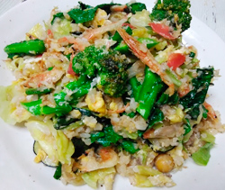

野菜たっぷりサラダチャーハン
- 調理時間：20 分
- （一人当たり）
- カロリー：371kcal
- たんぱく質：18.8g
- 脂質：14.5g
- 炭水化物：41.8g
- 塩分：2.7g


＜2人分＞
- 炊いたごはん
- 160g
- ミックスビーンズ
- 大さじ1
- チリメンジャコ
- 大さじ1
- 桜エビ
- 2g
- 卵
- 2個
- 植物油
- 大さじ1
- 塩
- 小さじ3/4
- コショウ、醤油
- 各少々
- ・ブロッコリー
（小房に切る） - 野菜類は合わせて300～400g位をお好みで
- ・菜の花
（3㎝幅に切る。茎は太ければ縦2等分に切る） - ・キャベツ
（一口大に切る） - ・ズッキーニ
（５㎜位の薄切り） - ・ニンジン
（イチョウ切り）
A


- Aの野菜を各々、切る。卵を割りほぐしておく。
- フライパンにサラダ油大さじ1/2を熱して①を炒め、さっと炒めて皿に取りだす。
- フライパンをきれいにして、残りのサラダ油を加え、卵をいれて半熟状に炒める。
ごはんを加えて炒め合わせる。 - ミックスビーンズ、チリメンジャコ、桜エビ、②を加えて炒め、塩、コショウで調味し、香りづけの醤油を鍋肌から入れ、全体を混ぜ合わせる。
野菜たっぷりサラダチャーハン
チャーハンの主な栄養素は炭水化物です。多めの油で炒めるので脂質も追加され、栄養素が偏りがちなイメージ。今回は、通常のチャーハンよりごはんの量を減らして、代わりに野菜の量を増やしています（平均的にはお茶碗１杯およそ150gで252kcalですが、レシピでは80gに減らしているのでごはんだけで118kcalのカロリーダウン）。多品目の野菜類を使用することで、不足しがちな食物繊維やビタミンＣも手軽に摂れますので、子どもたちにもおすすめです。少しの工夫でたくさんの栄養素を効率よくとれる一品に変身させてしまいましょう。